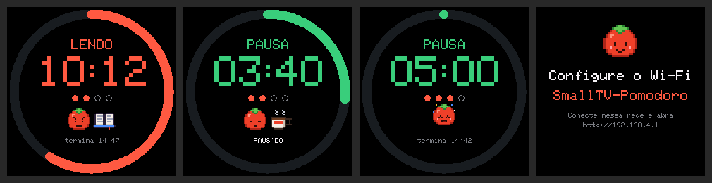
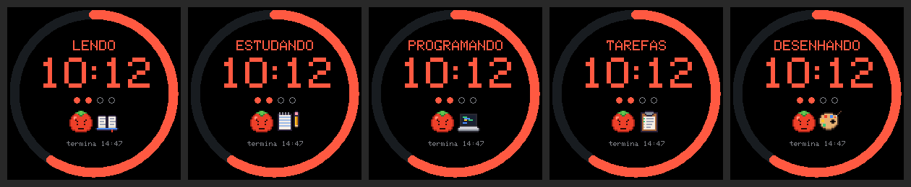
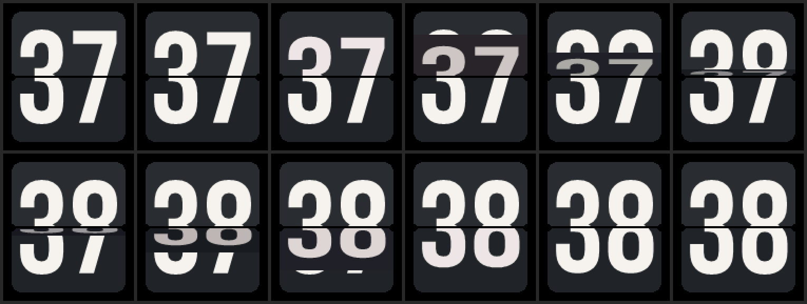

Seu SmallTV Ultra com Pomodoro, 8 mostradores e um tomate.
Um firmware novo para o relógio de mesa GeekMagic SmallTV Ultra: mostradores desenhados à mão, um timer Pomodoro com mascote em pixel art, clima sem chave de API e um painel web simples no celular.

O que é
O relógio: GeekMagic SmallTV Ultra
Um cubinho de mesa com Wi-Fi e uma tela colorida de 240×240 pixels. Por dentro tem um ESP8266 (o mesmo chip de muitos projetos de automação) e um display ST7789. De fábrica ele mostra hora, clima e fotos, com o firmware fechado da GeekMagic.
O firmware: SmallTV Pomodoro
Um programa novo para o mesmo aparelho, escrito do zero e aberto no GitHub. Você grava pelo painel web do próprio relógio, como uma atualização comum, e ele passa a ter mostradores novos, um timer Pomodoro e um mascote tomate. As fotos que já estavam gravadas continuam lá.

O que muda em relação ao firmware de fábrica
O hardware é o mesmo. O que muda é o que roda nele.
Funções
Tudo cabe em menos de 500 KB e roda no próprio relógio.
🕒8 mostradores
Matriz, Tomate, Analógico, Clima, Neon, Flip (com animação de virada de verdade), LCD retrô e Palavras (a hora por extenso, em português).
🍅Pomodoro com mascote
O tomate fica focado, relaxa com um café na pausa, dorme quando o timer está pausado e pula de alegria quando uma fase termina.
📚Atividade do foco
Escolha no painel o que vai fazer: ler, estudar, programar, tarefas ou desenhar. A tela mostra o objeto da atividade ao lado do tomate.
⛅Clima
Pelo Open-Meteo, sem cadastro nem chave de API. Na chuva o tomate abre o guarda-chuva; no frio põe cachecol; no calor, óculos escuros.
🖼️Fotos e GIFs
Usa o álbum que já estava no relógio. Fotos novas vão pelo painel e são recortadas para 240×240 automaticamente.
🌙Brilho noturno
Escolha um horário para a tela ficar mais fraca à noite e não iluminar o quarto.
📱Painel web
Abra no celular o IP que aparece na tela: galeria de mostradores, controle do Pomodoro, fotos e ajustes.
🎨Ajuste de cor da tela
Ordem de cor RGB/BGR, inversão e rotação 180°, com tela de teste de cores, porque isso varia entre unidades.
⬆️Atualização sem fio
Versões novas são enviadas pelo painel em /update, que também serve para voltar ao firmware original.





Como instalar
Leva uns 5 minutos e não precisa de cabo nem de programas no computador: tudo acontece pelo navegador.
-
Baixe o firmware
Pegue o arquivo
.binmais recente na seção Downloads, logo abaixo. -
Envie pelo painel de fábrica
Abra no navegador o IP que o relógio mostra, entre em Firmware Upgrade, escolha o arquivo e envie. O relógio reinicia sozinho.
Apareceu “ERROR[4]: Not Enough Space”?
O espaço de atualização de fábrica varia entre unidades. Nesse caso, passe antes por um carregador pequeno:
- Baixe
smalltv-mod-loader.bin(giovi321/smalltv-mod v2.8.2) e envie em Firmware Upgrade. - Conecte o celular ou computador à rede Wi-Fi aberta
SmallTV-Loader. - Abra
http://192.168.4.1/updatee envie o firmware SmallTV Pomodoro.
- Baixe
-
Conecte ao Wi-Fi
Se o relógio não entrar sozinho na sua rede, conecte-se à rede
SmallTV-Pomodoroe abrahttp://192.168.4.1para escolher a rede.Só funciona com redes de 2,4 GHz.
-
Abra o painel
Digite no navegador o IP que aparece na tela do relógio. Escolha o mostrador, a cidade do clima e comece um foco.
Atualizações seguintes: Sistema → Atualizar firmware.
Voltar ao firmware original
Quer o firmware da GeekMagic de volta? Baixe o .bin oficial em GeekMagicClock/smalltv-ultra e envie no painel do SmallTV Pomodoro em Sistema → Atualizar firmware (ou em /update, usuário admin).
Isso funciona porque o SmallTV Pomodoro usa o mesmo layout de memória do original e fica abaixo do tamanho limite (cerca de 530 KB). O sistema de arquivos é montado sem formatação automática: suas fotos não são apagadas.
Downloads
SmallTV Pomodoro
Arquivo .bin para enviar pelo painel do relógio.
Carregador (só se der erro de espaço)
smalltv-mod-loader.bin, do projeto giovi321/smalltv-mod.
Para quem quer mexer
🧩Criar um mostrador
Um arquivo face_<nome>.cpp e uma linha em faces_list.h. Guia passo a passo.
👾Desenhar em pixel art
Cada desenho é um .txt em assets/, com cores e quadros de animação. Como funciona.
🖥️Simulador no PC
O mesmo código de desenho do firmware roda no computador e gera as imagens das telas, sem precisar gravar o relógio.
Créditos e licenças
- Pinagem do aparelho: ESPHome devices — GeekMagic Ultra.
- Ordem de cor do painel e carregador para o erro de espaço: giovi321/smalltv-mod.
- Dígitos do mostrador LCD: fonte DSEG7 Classic, de keshikan, sob a SIL Open Font License 1.1 (licença). Os segmentos foram convertidos em polígonos.
- Dígitos do mostrador Flip: fonte Bebas Neue, da Dharma Type, sob a SIL Open Font License 1.1 (licença), também convertida em polígonos.
- Clima: Open-Meteo.
- Bibliotecas: Adafruit GFX e ST7789, ArduinoJson, JPEGDEC e AnimatedGIF (bitbank2).
GeekMagic e SmallTV são marcas dos seus donos. Este é um projeto independente, sem ligação com a GeekMagic. Gravar outro firmware é por sua conta e risco.